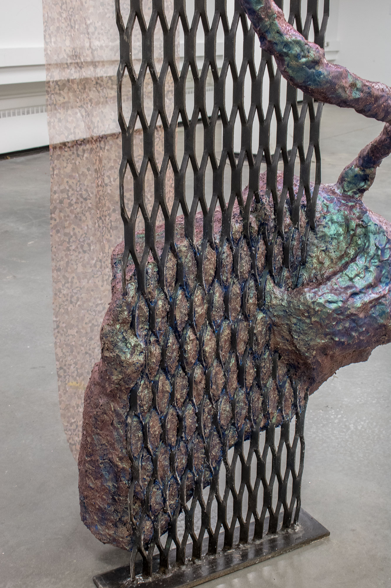
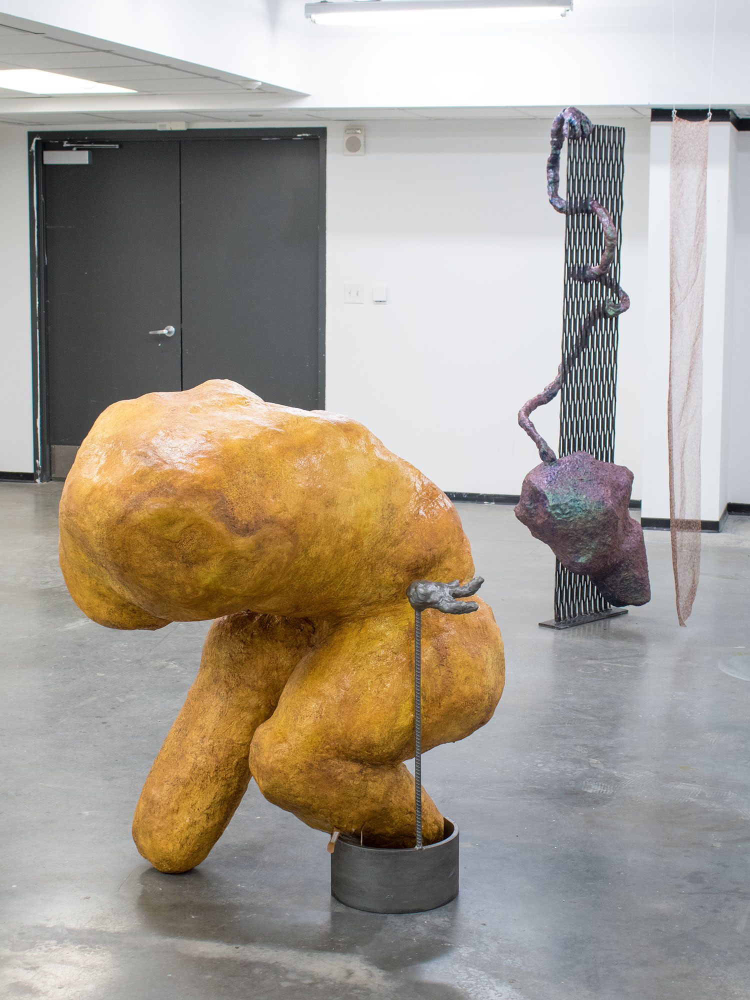
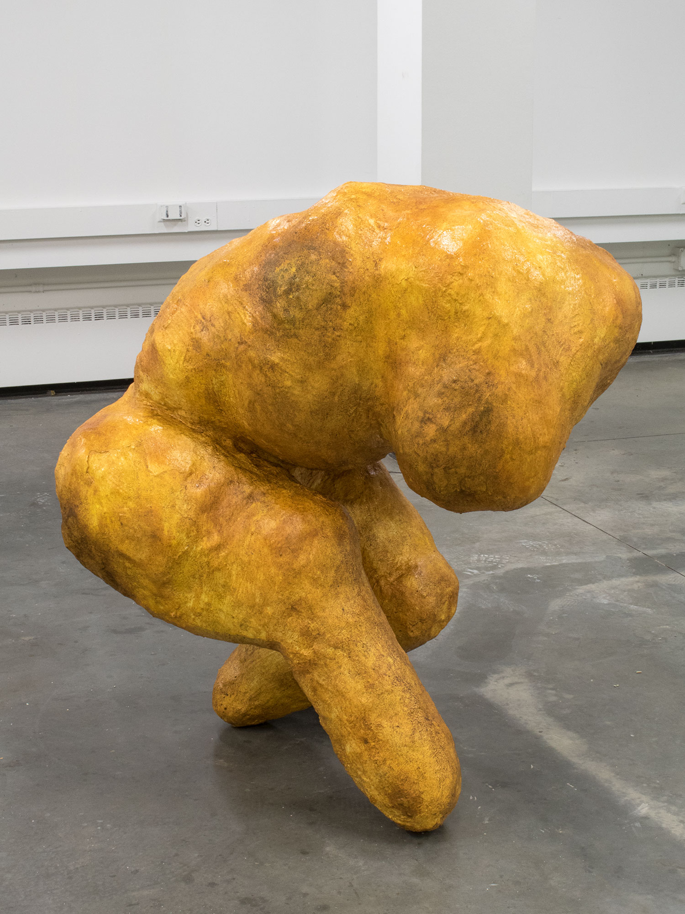
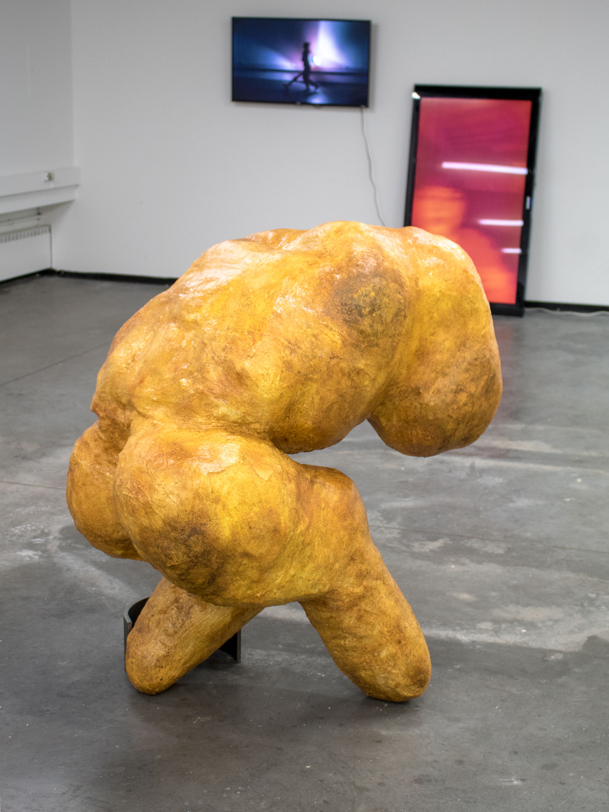
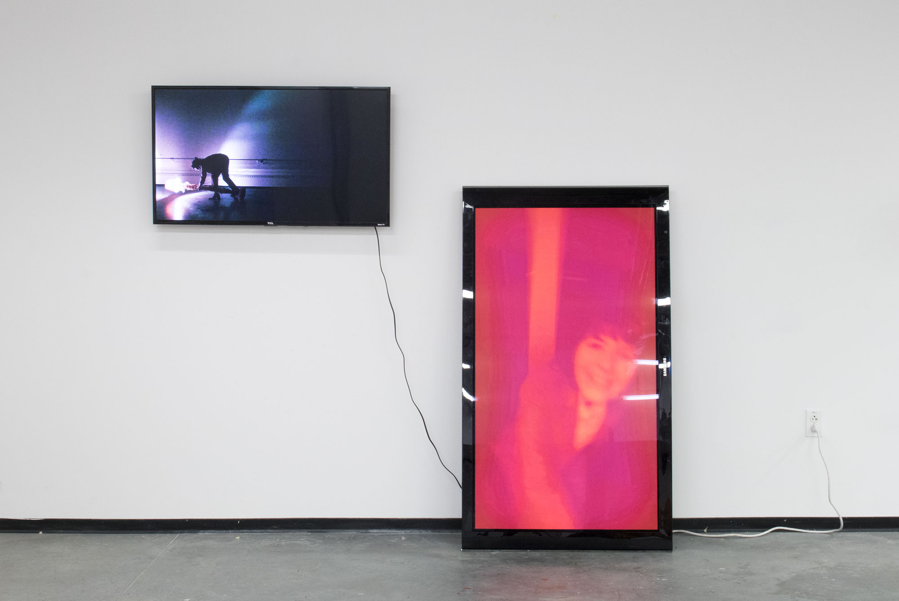

Sifting Thru & Thru
Steel, epoxy clay, paper maché, pigment, glass medium, & organza digitally printed with a collage of the artist's acne cropped from Facebook photos
79" x 23" x 13"


Well I'm A Tumbler
Carved polystyrene, hydrocal, plaster, garnet, micaceous iron oxide, paint, steel, epoxy clay, & band-aids
47" x 38" x 29"



Access By Action
2-channel silent looped video (horizontal screen 04:21, vertical screen 04:18 minutes)
New England Aggression
Carved polystyrene, concrete, paper maché, paint, quartz, found chair, & backscratcher
24" x 80" x 16"